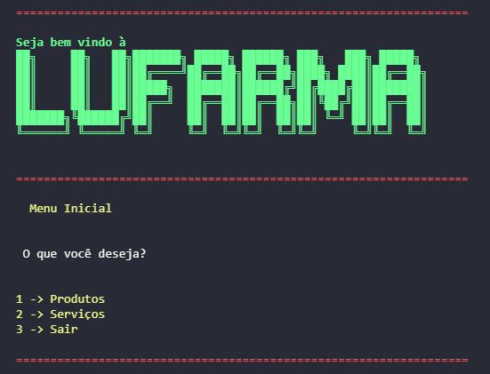
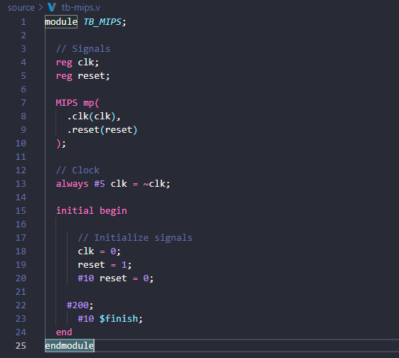

LuFarma
Lufarma - sua fármacia digital é um projeto desenvolvido em equipe onde o usuário utiliza o console como um chatbot e passa por fluxos contínuos e pensados antes da implementação.
Ele conclui o módulo I do FAP-Softex. Nele foi trabalhado os mais diferentes conceitos de lógica de programação com javascript: obejtos, arrays, laços de repetição, condicionais.
Acesse o repositório do github, Clique aqui!
Processador MIPS
Projeto desenvolvido para disciplina de Sistemas Digitais 2024.1, Centro de Informática UFPE.
Nesse projeto utilizamos a HDL Verilog para implemetar uma microarquitetura MIPS de ciclo único, capaz de rodar um software também desenvolvido pela equipe. Software esse que foi inicialmente pensado em python, adaptado para MIPS assembly e depois para linguagem de máquina.
Acesse o repositório do github, Clique aqui!


Don't touch me
"Don't Touch Me" é um jogo "one hit kill" (onde o jogador morre caso seja tocado por um inimigo) desenvolvido em python que tem como objetivo coletar o maior número de moedas sem ser tocado pelos obstáculos. A diversão do jogo reside na dificuldade de desviar dos obstáculos enquanto se coleta as moedas espalhadas pela tela. Além disso, cada moeda possui efeitos únicos que podem ajudar ou prejudicar o jogador.
Acesse o repositório do github, Clique aqui!